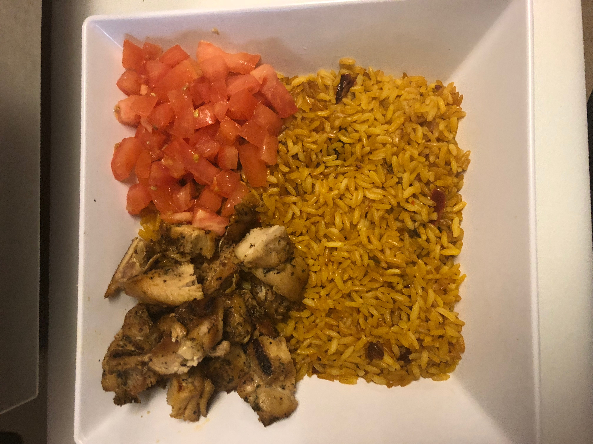

How To Make a Rat Chop
What is a Rat Chop? (Mouse over for the answer)
Ingredients?
- Yellow Rice
- Tomatoes
- Lettuce
- Grilled Chicken
- Curry Mayo
Steps?
- Wash your hands!
- Place 2 cups of yellow rice so that it fills 1/4 of your chosen bowl
- Add 1 cup of grilled chicken to the third corner of your bowl
- Add 1/2 a cup of tomatoes to one corner of your bowl

- Add 1/2 a cup of lettuce to another corner of yout bowl (the idea is to make the bowl look cute
- Finally add two containers full of curry mayo to your dish
- Now it's up to you, you can mix it, add more ingrediants, but the most important step is to enjoy!!!